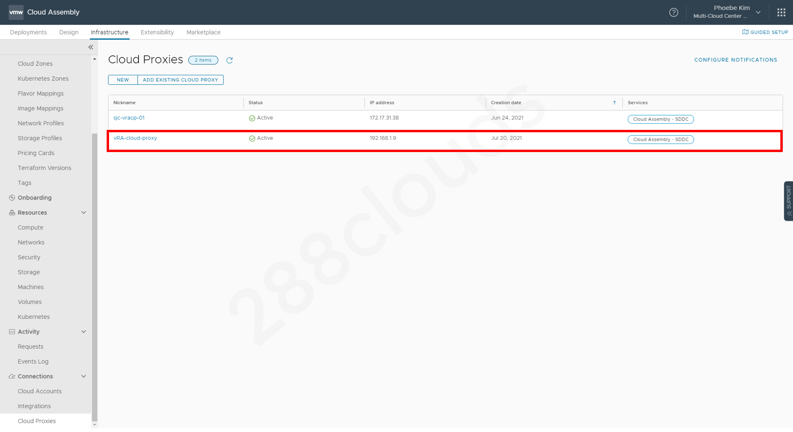

Using vRNI with VMC on AWS: Getting Started

Contenido
~ Este post será traducido al español próximamente ~
vRealize Network Insight can be used to gain visibility into the workloads in a VMware Cloud on AWS Software-Defined Data Center (SDDC). Let’s learn how you can get started with using vRealize Network Insight with VMware Cloud on AWS.
Demo Product Versions
- vRNI Cloud
- VMware Cloud on AWS (SDDC version 1.14v4)
Prerequisites
VMC on AWS:
- SDDC deployed
- Access to the SDDC
Process Overview
- Deploy a vRNI Data Collector in the VMC on AWS SDDC.
- Add firewall rules for the vRNI Data Collector
- Configure the vRNI Data Collector.
- Add VMC on AWS vCenter and NSX as data sources.
Demo / Example
Deploy a vRNI Data Collector
- In vRNI, go to Settings.

- Click Infrastructure and Support > Overview and Updates. Click “ADD COLLECTOR VM”.
- Click “DOWNLOAD” to download the vRNI Data Collector VM OVA.
- Go to the VMC on AWS SDDC vSphere Client and deploy OVF template.
Note that since this is a VMC on AWS SDDC, you can only select the WorkloadDatastore.
At the time of writing this post, you must select a native VMC on AWS segment (sddc-cgw-network-1) to deploy the vRNI Data Collector VM.
Go back to vRNI to copy the shared secret.
Shared secret is the only value you have to give for now. Other settings, such as IP address, DNS, and NTP, will be configured after the VM is deployed and powered on for the first time.
- Once the vRNI Data Collector is deployed, power it on.


Create Firewall Rules for vRNI Data Collector
- Go to VMC on AWS UI > Networking & Security > Groups > Management Groups. Click “ADD GROUP” and create a new group for the vRNI Data Collector VM. Set the member with the IP address that you are planning to give the vRNI Data Collector VM.
- Go to Networking & Security > Gateway Firewall > Management Gateway. Add two rules like shown in the screenshot below. These rules allow the vRNI Data Collector to communicate with vCenter and NSX. Remember to publish the rules.
- Go to VMC on AWS UI > Networking & Security > Groups > Compute Groups. Create a new group for the vRNI Data Collector VM like you did in the Management Groups section.
- Go to Networking & Security > Gateway Firewall > Compute Gateway. Add a rule that allows vRNI Data Collector VM to communicate with vRNI platform, as shown in the screenshot below. Remember to publish the rule.


Configure vRNI Data Collector
- Go to the VMC on AWS SDDC vSphere Client and launch a remote console for the vRNI Data Collector VM.
- Login as user
consoleuserwith passwordconsole. Then typesetupto start configuring the appliance. You can see these instructions in the console too.
- Create user passwords as instructed.
- Give the IP address to the appliance. Make sure the IP address is same as the one you’ve used to create the security groups in the VMC on AWS for the firewalls in the previous section. You can use a public DNS like I did, or use an internal DNS server if you have one deployed in the VMC on AWS SDDC.
- You can use a public NTP like Amazon Time Sync Service (169.254.169.123), which is what I’m doing here, or use an internal NTP server if you have one deployed in the VMC on AWS SDDC.
- Creating a web-proxy is optional. I don’t have one in my environment so I’m not going to configure this here.
Wait until the configuration is finished.
- Go to vRNI > Settings > Infrastructure and Support > Overview and Updates. You can now see the Data Collector VM you have deployed in the VMC on AWS SDDC.


Add VMC on AWS Data Sources
- Go to Settings > Accounts and Data Sources. Click “ADD SOURCE”.
- Click “VMC on AWS - vCenter” under “VMware Cloud (VMC) on AWS” section.
- Select the vRNI Data Collector that you deployed in the VMC on AWS SDDC. Provide the IP address/FQDN for the VMC on AWS SDDC vCenter. This could be the public or the private IP of the vCenter, depending on how you have your SDDC set up. The validation will not be successful if the vRNI Data Collector cannot communicate back and forth with the vCenter. Since I don’t have a web proxy set up, I’m going use the private vCenter IP here.
- Click “ADD SOURCE” to now add the NSX Manager.
- Click “VMC on AWS - NSX Manager” under “VMware Cloud (VMC) on AWS” section.
- Choose the VMC on AWS vCenter data source that we’ve just added. Select the vRNI Data Collector deployed in the VMC on AWS sddc. Provide the NSX Manager private IP adress and provide the API token where it says “CSP Refresh Token”.
The API token can be generated by going to your account > API Tokens. Make sure that you’re providing the API Token with the VMC on AWS NSX Cloud Admin role. Refer to step 12 of my blog on deploying a vRA Cloud Proxy if you’re having trouble finding where to generate this API token.
- VMC NSX Manager data source has now been added.


vRNI can now collect and display information about workloads in the VMC on AWS SDDC!
View VMC on AWS Environment
- Go to Environments > VMware Cloud on AWS.
- Click on the VMC on AWS SDDC that you’ve just added.
- View the main dashboard for the VMC on AWS SDDC.


Credit: Thanks to my colleague, Asaf Blubshtein, for working with me on this.